Câu 1. Cho hàm số \( y = f(x) \) có bảng biến thiên như sau:
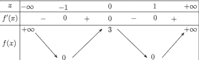
Hàm số đã cho nghịch biến trên khoảng nào dưới đây?
Lời giải chi tiết:
Dựa vào bảng biến thiên, ta thấy dấu của đạo hàm \( f'(x) \):
Do đó, hàm số nghịch biến trên các khoảng \( (-\infty; -1) \) và \( (0; 1) \). Trong các lựa chọn, chỉ có khoảng \( (0; 1) \) xuất hiện.
Đáp án: B
Câu 2. Cho hàm số \( f(x) \) liên tục trên \([-1; 5]\) và có đồ thị trên đoạn \([-1; 5]\) như hình vẽ. Tổng giá trị lớn nhất và giá trị nhỏ nhất của hàm số \( f(x) \) trên đoạn \([-1; 5]\) bằng:
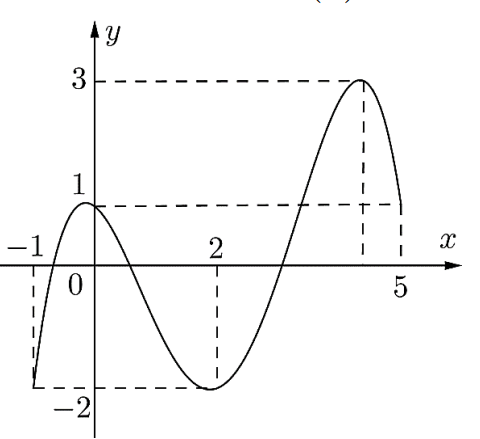Lời giải chi tiết:
Từ đồ thị hàm số \( f(x) \) liên tục trên đoạn \( [-1; 5] \), ta xác định:
Tổng giá trị lớn nhất và nhỏ nhất: \( M + m = 3 + (-2) = 1 \).
Đáp án: C
Câu 3. Cho hàm số \( y = f(x) \) có bảng biến thiên như sau:
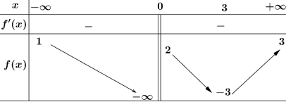
Tổng số tiệm cận đứng và tiệm cận ngang của đồ thị hàm số đã cho là:
Lời giải chi tiết:
Từ bảng biến thiên:
Vậy, đồ thị hàm số có 1 tiệm cận đứng và 2 tiệm cận ngang, tổng cộng là 3 tiệm cận.
Đáp án: B
Câu 4. Đồ thị của hàm số nào dưới đây thỏa mãn điều kiện có dạng hàm số bậc 3 với hệ số \( a > 0 \) và đi qua gốc tọa độ?
Lời giải chi tiết:
Hàm số cần thỏa mãn: là hàm số bậc 3 với hệ số \( a > 0 \) và đi qua gốc tọa độ \( (0; 0) \).
Chỉ phương án A thỏa mãn.
Đáp án: A
Câu 5. Trong không gian \( Oxyz \), cho hai điểm \( A(1; 1; -2) \) và \( B(2; 2; 1) \). Vector \( \overrightarrow{AB} \) có tọa độ là:
Lời giải chi tiết:
Cho hai điểm \( A(1; 1; -2) \) và \( B(2; 2; 1) \). Tọa độ vector \( \overrightarrow{AB} \) được tính như sau:
\( \overrightarrow{AB} = (x_B - x_A; y_B - y_A; z_B - z_A) = (2 - 1; 2 - 1; 1 - (-2)) = (1; 1; 3) \).
Đáp án: C
Câu 6. Trong không gian \( Oxyz \), phương trình mặt phẳng \( (\alpha) \) đi qua điểm \( A(2; -1; 3) \) và có vector pháp tuyến \( \vec{n} = (2; 3; -1) \) là:
Lời giải chi tiết:
Mặt phẳng \( (\alpha) \) đi qua điểm \( A(2; -1; 3) \) và có vector pháp tuyến \( \vec{n} = (2; 3; -1) \). Phương trình mặt phẳng có dạng:
\( 2(x - 2) + 3(y + 1) - 1(z - 3) = 0 \).
Giải ra: \( 2x - 4 + 3y + 3 - z + 3 = 0 \Rightarrow 2x + 3y - z + 2 = 0 \).
Đáp án: B
Câu 7. Trong không gian \( Oxyz \), cho mặt cầu \( (S): x^2 + y^2 + z^2 - 4x + 8y - 2z - 4 = 0 \). Tọa độ tâm \( I \) và bán kính \( R \) của mặt cầu \( (S) \) là:
Lời giải chi tiết:
Mặt cầu \( (S): x^2 + y^2 + z^2 - 4x + 8y - 2z - 4 = 0 \). Hoàn phương bình phương:
\( x^2 - 4x = (x - 2)^2 - 4 \), \( y^2 + 8y = (y + 4)^2 - 16 \), \( z^2 - 2z = (z - 1)^2 - 1 \).
Phương trình trở thành: \( (x - 2)^2 - 4 + (y + 4)^2 - 16 + (z - 1)^2 - 1 - 4 = 0 \).
\( (x - 2)^2 + (y + 4)^2 + (z - 1)^2 = 25 \).
Tâm \( I(2; -4; 1) \), bán kính \( R = \sqrt{25} = 5 \).
Đáp án: A
Câu 8. Một người thống kê lại thời gian thực hiện cuộc gọi điện thoại của người đó trong một tuần ở bảng sau. Hãy tìm khoảng tứ phân vị của mẫu số liệu ghép nhóm này?
| Thời gian (giây) | \([0; 60)\) | \([60; 120)\) | \([120; 180)\) | \([180; 240)\) | \([240; 300)\) | \([300; 360)\) |
|---|---|---|---|---|---|---|
| Số cuộc gọi | 8 | 10 | 7 | 5 | 2 | 1 |
Lời giải chi tiết:
Cỡ mẫu: \( n = 8 + 10 + 7 + 5 + 2 + 1 = 33 \).
Tứ phân vị thứ nhất \( Q_1 \): Vị trí \( \frac{n+1}{4} = \frac{33+1}{4} = 8.5 \), lấy trung bình \( x_8 \) và \( x_9 \). Vì \( x_8 \in [0; 60) \), \( x_9 \in [60; 120) \), nên \( Q_1 = 60 \).
Tứ phân vị thứ ba \( Q_3 \): Vị trí \( \frac{3(n+1)}{4} = \frac{3 \cdot 34}{4} = 25.5 \), lấy trung bình \( x_{25} \) và \( x_{26} \). Vì \( x_{25} \in [120; 180) \), \( x_{26} \in [180; 240) \), nên \( Q_3 = 180 \).
Khoảng tứ phân vị: \( \Delta_Q = Q_3 - Q_1 = 180 - 60 = 120 \).
Đáp án: C
Câu 9. Cho hàm số \( y = f(x) \) liên tục trên đoạn \([a; b]\). Gọi \( F(x) \) là một nguyên hàm của hàm số \( f(x) \) trên đoạn \([a; b]\). Chọn mệnh đề sai.
Lời giải chi tiết:
Xét các mệnh đề:
Mệnh đề sai là B.
Đáp án: B
Câu 10. Cho hình chóp \( S.ABC \) có đáy là tam giác vuông cân tại \( C \), \( AC = a \) và \( SA \) vuông góc với mặt phẳng đáy. Khoảng cách từ \( B \) đến mặt phẳng \( (SAC) \) bằng:
Lời giải chi tiết:
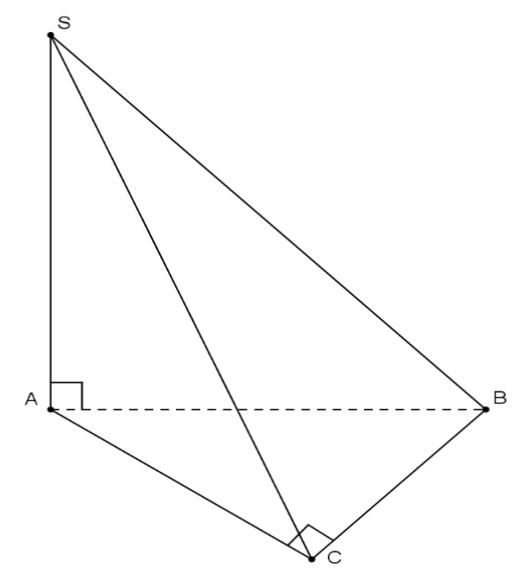Hình chóp \( S.ABC \) có đáy là tam giác vuông cân tại \( C \), \( AC = a \), \( SA \perp (ABC) \).
Tam giác \( ABC \) vuông tại \( C \), nên \( BC = AC = a \), và \( AC \perp BC \).
Vì \( SA \perp (ABC) \), suy ra \( SA \perp BC \). Do đó, \( BC \perp (SAC) \) (vì \( BC \) vuông góc với cả \( SA \) và \( AC \)).
Khoảng cách từ \( B \) đến mặt phẳng \( (SAC) \) là độ dài \( BC = a \).
Đáp án: D
Câu 11. Tập nghiệm của bất phương trình \( 3^x < 2 \) là:
Lời giải chi tiết:
Bất phương trình: \( 3^x < 2 \).
Lấy log cơ số 3: \( x < \log_3 2 \).
Vậy tập nghiệm là \( (-\infty; \log_3 2) \).
Đáp án: A
Câu 12. Cho cấp số cộng \( (u_n) \) với \( u_1 = 2022 \) và công sai \( d = 7 \). Giá trị của \( u_6 \) bằng:
Lời giải chi tiết:
Cấp số cộng có \( u_1 = 2022 \), công sai \( d = 7 \).
Công thức: \( u_n = u_1 + (n-1)d \).
Với \( n = 6 \): \( u_6 = 2022 + 5 \cdot 7 = 2022 + 35 = 2057 \).
Đáp án: D
Câu 13. Cho hàm số \( f(x) = \frac{2x - 3}{x^2 + 4} \). Xét các phát biểu sau:
Lời giải chi tiết:
Cho hàm số \( f(x) = \frac{2x - 3}{x^2 + 4} \).
a) Tính \( f(24) = \frac{2 \cdot 24 - 3}{24^2 + 4} = \frac{48 - 3}{576 + 4} = \frac{45}{580} = \frac{9}{116} \). Đúng.
b) Tiệm cận ngang: \( \lim_{x \to \pm \infty} f(x) = \lim_{x \to \pm \infty} \frac{2x - 3}{x^2 + 4} = 0 \). Trục tung \( y = 0 \) là tiệm cận ngang. Đúng.
c) Đạo hàm: \( f'(x) = \frac{(2)(x^2 + 4) - (2x - 3)(2x)}{(x^2 + 4)^2} = \frac{-2x^2 + 6x - 8}{(x^2 + 4)^2} \).
Giải \( f'(x) = 0 \): \( -2x^2 + 6x - 8 = 0 \Rightarrow x^2 - 3x + 4 = 0 \). Delta âm, không có cực trị. Sai.
d) Tập giá trị: Từ \( f'(x) \), ta thấy tại \( x = -1 \), \( f(-1) = -1 \); tại \( x = 4 \), \( f(4) = \frac{1}{4} \). Tập giá trị là \( [-1; \frac{1}{4}] \). Với \( a = -1 \), \( b = \frac{1}{4} \), thì \( 3a + 4b = 3(-1) + 4 \cdot \frac{1}{4} = -3 + 1 = -2 \neq 5 \). Sai.
Đáp án: a) Đúng, b) Đúng, c) Sai, d) Sai
Câu 14. Một chất điểm \( A \) xuất phát từ \( O \), chuyển động thẳng với vận tốc biến thiên theo thời gian bởi quy luật \( v(t) = \frac{1}{100}t^2 + \frac{13}{30}t \, (\text{m/s}) \), trong đó \( t \) (giây) là khoảng thời gian tính từ lúc \( A \) bắt đầu chuyển động. Từ trạng thái nghỉ, một chất điểm \( B \) cũng xuất phát từ \( O \), chuyển động thẳng cùng hướng với \( A \) nhưng chậm hơn 10 giây so với \( A \) và có gia tốc bằng \( a \, (\text{m/s}^2) \) (\( a \) là hằng số). Sau khi \( B \) xuất phát được 15 giây thì đuổi kịp \( A \). Xét các phát biểu sau:
Lời giải chi tiết:
a) Vận tốc \( v_B(t) = \int a \, dt = at + C \). Tại \( t = 0 \), \( v_B(0) = 0 \), nên \( C = 0 \). Vậy \( v_B(t) = at \). Đúng.
b) Quãng đường của \( A \): \( S_A = \int_0^{25} \left( \frac{1}{100}t^2 + \frac{13}{30}t \right) dt = \left[ \frac{1}{300}t^3 + \frac{13}{60}t^2 \right]_0^{25} = \frac{1}{300} \cdot 25^3 + \frac{13}{60} \cdot 25^2 = \frac{375}{2} \). Đúng.
c) Quãng đường của \( B \): \( S_B = \int_0^{15} at \, dt = \left[ \frac{a t^2}{2} \right]_0^{15} = \frac{225a}{2} \). Đúng.
d) Tại \( t_B = 15 \) giây, \( S_A(25) = S_B(15) \): \( \frac{375}{2} = \frac{225a}{2} \Rightarrow a = \frac{5}{3} \). Vận tốc \( v_B(15) = \frac{5}{3} \cdot 15 = 25 \, \text{m/s} \). Đúng.
Đáp án: a) Đúng, b) Đúng, c) Đúng, d) Đúng
Câu 15. Trong không gian \( Oxyz \), cho mặt cầu \( (S): x^2 + y^2 + z^2 - 6x + 4y - 2z + 5 = 0 \). Phương trình mặt phẳng \( (Q) \) chứa trục \( Ox \) và cắt \( (S) \) theo giao tuyến là một đường tròn có bán kính bằng 2. Xét các phát biểu sau:
Lời giải chi tiết:
Mặt cầu \( (S): x^2 + y^2 + z^2 - 6x + 4y - 2z + 5 = 0 \).
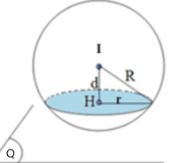Hoàn phương bình phương: \( (x - 3)^2 - 9 + (y + 2)^2 - 4 + (z - 1)^2 - 1 + 5 = 0 \Rightarrow (x - 3)^2 + (y + 2)^2 + (z - 1)^2 = 9 \).
Tâm \( I(3; -2; 1) \), bán kính \( R = 3 \).
a) Tâm \( I(-3; 2; -1) \), \( R = 3 \). Sai, vì tâm là \( (3; -2; 1) \).
b) Khoảng cách \( OI = \sqrt{3^2 + (-2)^2 + 1^2} = \sqrt{14} > 3 \). Điểm \( O(0; 0; 0) \) nằm ngoài mặt cầu. Sai.
c) Mặt phẳng \( (Q) \) cắt \( (S) \) theo đường tròn bán kính \( r = 2 \). Khoảng cách từ tâm đến \( (Q) \): \( d = \sqrt{R^2 - r^2} = \sqrt{9 - 4} = \sqrt{5} \neq 1 \). Sai.
d) Mặt phẳng \( (Q) \) chứa trục \( Ox \), vector pháp tuyến \( \vec{n} = (0; b; c) \). Phương trình: \( by + cz = 0 \). Khoảng cách: \( \frac{|-2b + c|}{\sqrt{b^2 + c^2}} = \sqrt{5} \). Giải phương trình: \( (2b - c)^2 = 5(b^2 + c^2) \Rightarrow b = -2c \). Chọn \( c = -1 \), \( b = 2 \), phương trình: \( 2y - z = 0 \). Đúng.
Đáp án: a) Sai, b) Sai, c) Sai, d) Đúng
Câu 16. Ở huyện Đông Anh, Hà Nội, vào tháng 7, người ta đo được xác suất để có mưa vào thứ hai là \( x^2 \). Nếu trời có mưa vào thứ hai thì xác suất để có mưa vào thứ ba là \( \frac{1}{4}x \). Nếu trời không mưa vào thứ hai thì xác suất để có mưa vào thứ ba là \( x \). Xét các phát biểu sau:
Lời giải chi tiết:
Gọi biến cố A là: “Có mưa vào thứ hai”. B là: “Có mưa vào thứ ba”.
Từ giả thiết có \(P(A) = x^2 \Rightarrow P(\bar{A}) = 1-x^2\)
\(P(B|A) = \frac{1}{4}\) và \(P(B|\bar{A}) = x\)
a) Xác suất để mưa sẽ rơi vào cả thứ hai và thứ ba là \(P(A).P(B|A) = x^2 \cdot \frac{1}{4} = \frac{x^3}{4}\) suy ra mệnh đề sai.
b) Để khả năng trời sẽ có mưa vào cả thứ hai và thứ ba là 25% thì \(\frac{x^3}{4} = 25\% \Leftrightarrow x=1\) suy ra mệnh đề sai.
c) Xác suất để trời sẽ mưa vào thứ ba là \(P(B) = P(A).P(B|A) + P(\bar{A}).P(B|\bar{A})\)
\(= x^2 \cdot \frac{1}{4} + (1-x^2) \cdot x\)
\(= x - \frac{3x^3}{4}\) suy ra mệnh đề sai.
d) Điều kiện của biến \(0 \le x \le 1\)
Xét hàm số \(y = x - \frac{3}{4}x^3\) trên đoạn \([0;1]\)
Ta có \(y' = 1 - \frac{9}{4}x^2\); \(y' = 0 \Leftrightarrow \left[ \begin{array}{l} x = \frac{2}{3} \\ x = -\frac{2}{3} (l) \end{array} \right.\)
\(y(0)=0\); \(y\left(\frac{2}{3}\right) = \frac{4}{9}\); \(y(1) = \frac{1}{4}\). Suy ra \(\max_{[0;1]} y = y\left(\frac{2}{3}\right)\)
Như vậy, khi \(x = \frac{2}{3}\) thì xác suất trời sẽ mưa vào thứ ba là lớn nhất.
Theo công thức Bayes, xác suất để có mưa vào thứ hai là
\(P(A|B) = \frac{P(A)P(B|A)}{P(B)} = \frac{x^2 \cdot \frac{1}{4}}{x - \frac{3}{4}x^3} = \frac{\left(\frac{2}{3}\right)^2 \cdot \frac{1}{4}}{\frac{2}{3} - \frac{3}{4}\left(\frac{2}{3}\right)^3} = \frac{1}{6}\) suy ra mệnh đề đúng.
Câu 17. Cho lăng trụ tam giác đều \( ABC.A_1B_1C_1 \) có cạnh \( AB = 6 \). Gọi \( M \) là trung điểm cạnh \( AA_1 \). Biết góc giữa hai đường thẳng \( CM \) và \( A_1B \) là \( 45^\circ \). Tính khoảng cách giữa đường thẳng \( CM \) và \( A_1B \). (Kết quả làm tròn đến hàng phần trăm).
Lời giải chi tiết:
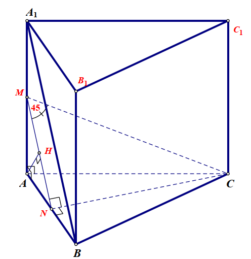Gọi \(N\) là trung điểm của \(AB\), dễ thấy \(CN \perp (A_1B_1BA) \Rightarrow CN \perp MN\).
Ta có \(MN \parallel A_1B \Rightarrow (CM, A_1B) = (CM, MN) = \widehat{NMC} = 45^\circ\).
Dẫn đến \(CN = MN = 6 \cdot \frac{\sqrt{3}}{2} = 3\sqrt{3}\) ; \(CM = 3\sqrt{3} \cdot \sqrt{2} = 3\sqrt{6}\)
\(\Rightarrow AM = \sqrt{CM^2 - AC^2} = \sqrt{9 \cdot 6 - 6^2} = 3\sqrt{2}\).
Do đó: \(d(CM, A_1B) = d((CMN), A_1B) = d(B, (CMN)) = d(A, (CMN))\).
Từ \(A\) kẻ \(AH \perp MN\) mà ta có \(AH \perp CN\) nên \(AH \perp (CMN)\).
Suy ra \(d(A, (CMN))) = AH\).
\(\frac{1}{AH^2} = \frac{1}{AM^2} + \frac{1}{AN^2} \Rightarrow AH \approx 2,45\).
Câu 18. Có ba lớp học sinh 10A, 10B, 10C gồm 128 em cùng tham gia lao động trồng cây. Mỗi em lớp 10A trồng được 3 cây bạch đàn và 4 cây bàng. Mỗi em lớp 10B trồng được 2 cây bạch đàn và 5 cây bàng. Mỗi em lớp 10C trồng được 6 cây bạch đàn. Cả ba lớp trồng được 476 cây bạch đàn và 375 cây bàng. Hỏi lớp 10C có bao nhiêu học sinh?
Lời giải chi tiết:
Gọi số học sinh lớp 10A, 10B, 10C lần lượt là \( x, y, z \). Hệ phương trình:
\( x + y + z = 128 \)
\( 3x + 2y + 6z = 476 \)
\( 4x + 5y = 375 \)
Giải hệ: Từ \( 4x + 5y = 375 \), \( 3x + 2y + 6z = 476 \), và \( x + y + z = 128 \), ta được \( x = 40 \), \( y = 43 \), \( z = 45 \).
Vậy lớp 10C có 45 học sinh.
Đáp án: 45
Câu 19. Trong không gian \( Oxyz \), một ngọn hải đăng được đặt ở vị trí \( I(21; 35; 50) \), biết bán kính phủ sóng của ngọn đèn là 4 km. Giả sử người đi biển đi chuyển theo đường thẳng từ vị trí \( I(21; 35; 50) \) đến vị trí \( A(5121; 658; 0) \). Tìm cao độ của vị trí cuối cùng trên đoạn thẳng \( IA \) sao cho người đi biển còn có thể nhìn thấy được ánh sáng từ ngọn hải đăng.
Lời giải chi tiết:
Đường thẳng \(IA\) đi qua điểm I và nhận \(\vec{IA}(5100; 623; -50)\) làm vectơ chỉ phương.
Phương trình tham số của đường thẳng \(IA\) là \(\left\{ \begin{aligned} x &= 21 + 5100t \\ y &= 35 + 623t \\ z &= 50 - 50t \end{aligned} \right.\) .
Giả sử H là vị trí cuối cùng trên đoạn thẳng \(IA\) sao cho người đi biển có thể nhìn thấy ánh sáng từ ngọn hải đăng. Khi đó IH = R.
Ta có \(H \in IA\) nên gọi tọa độ điểm \(H(21+5100t; 35+623t; 50-50t) \Rightarrow \vec{IH}(5100t; 623t; -50t)\).
\(IH = R \Leftrightarrow \sqrt{(5100t)^2 + (623t)^2 + (-50t)^2} = 4000\)
\(\Leftrightarrow t \approx \pm 0,78\).
+ Với \(t \approx 0,78\), ta có \(H(3900; 520,94; 11)\) và \(\vec{IH}(3978; 485,94; -39)\)
Khi đó \(\vec{IA} = \frac{50}{39}\vec{IH}\) nên hai vectơ \(\vec{IA}, \vec{IH}\) cùng hướng, vậy thỏa mãn H thuộc đoạn thẳng \(IA\).
+ Với \(t \approx -0,78\), ta có \(H(-3957; -450,94; 89)\) và \(\vec{IH}(-3978; -485,94; 39)\)
Khi đó \(\vec{IA} = -\frac{50}{39}\vec{IH}\) nên hai vectơ \(\vec{IA}, \vec{IH}\) ngược hướng, vậy thỏa mãn H không thuộc đoạn thẳng \(IA\).
Vậy vị trí cuối cùng trên đoạn thẳng \(IA\) sao cho người đi biển còn có thể nhìn thấy được ánh sáng từ ngọn hải đăng là điểm \(H(3900; 520,94; 11)\), cao độ là 11.
Câu 20. Sân trường có một bồn hoa hình tròn tâm \( O \). Một nhóm học sinh lớp 12 được giao thiết kế bồn hoa, nhóm này định chia bồn hoa thành bốn phần bởi hai đường parabol có cùng đỉnh \( O \) và đối xứng nhau qua \( O \). Hai đường parabol này cắt đường tròn tại bốn điểm \( A, B, C, D \) tạo thành một hình vuông có cạnh bằng 4 m (như hình vẽ). Phần diện tích \( S_1, S_2 \) dùng để trồng hoa, phần diện tích \( S_3, S_4 \) dùng để trồng cỏ. Biết kinh phí trồng hoa là 150.000 đồng/m\(^2\), kinh phí trồng cỏ là 100.000 đồng/m\(^2\). Hỏi nhà trường cần bao nhiêu tiền để trồng bồn hoa đó? (Đơn vị tính nghìn đồng, làm tròn đến chục nghìn).
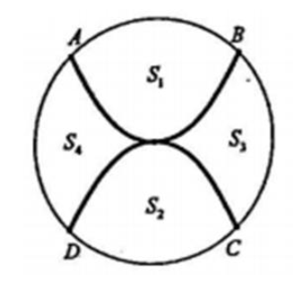Lời giải chi tiết:
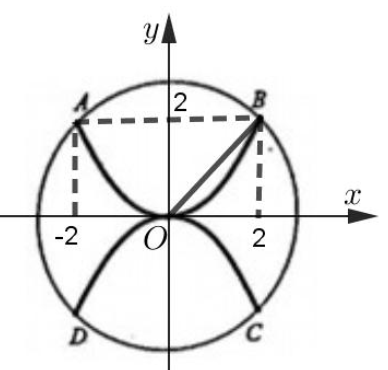Chọn hệ trục tọa độ vuông góc Oxy như hình vẽ.
Bồn hoa là hình tròn tâm O, bán kính bằng \(OB = 2\sqrt{2}\) suy ra phương trình đường tròn biểu diễn cho bồn hoa là \(x^2 + y^2 = 8\)
\(\Rightarrow\) Phương trình nửa đường tròn phía trên trục hoành là \(y = \sqrt{8 - x^2}\).
Đường parabol nằm phía trên trục hoành có phương trình \(y = \frac{1}{2}x^2\).
Phần diện tích \(S_1 = \int_{-2}^{2} \left(\sqrt{8 - x^2} - \frac{1}{2}x^2\right) dx = 7,6165 \text{ m}^2\).
Dễ thấy \(S_2 = S_1\) nên diện tích phần trồng hoa là \(S = 15,23 \text{ m}^2\).
Vậy kinh phí trồng hoa là 2.280.000 đồng.
Diện tích trồng cỏ bằng diện tích bồn hoa trừ đi diện tích trồng hoa, bằng \(8\pi - 15,23 = 9,90 \text{ m}^2\).
Suy ra kinh phí trồng cỏ là 990.000 đồng.
Vậy số tiền nhà trường cần để trồng bồn hoa đó là 2.280.000 + 990.000 = 3.270.000 (đồng).
Vậy số tiền nhà trường cần để trồng bồn hoa đó là 3270 (nghìn đồng),
Câu 21. Để chắn đường hành lang hình chữ L, người ta dùng một que sào thẳng dài nhất chạm kín những điểm chạm với hành lang. Biết \( a = 18 \, \text{m} \) và \( b = 2 \, \text{m} \), hỏi cái sào thỏa mãn điều kiện trên có chiều dài ngắn nhất là bao nhiêu? (Làm tròn đến chữ số thập phân thứ nhất).
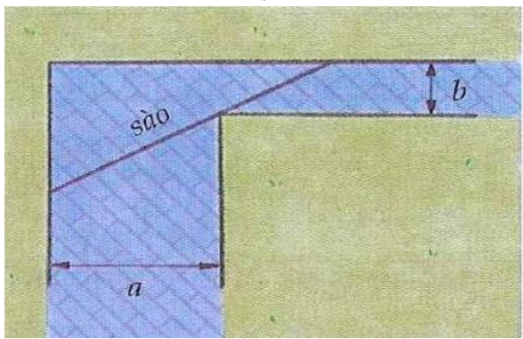Lời giải chi tiết:
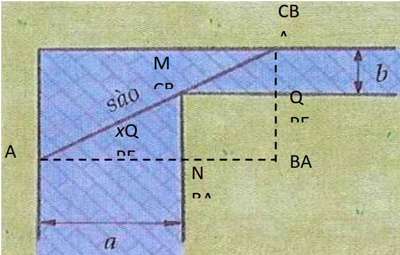Xác định các điểm và vẽ thêm các đường như hình vẽ
Đặt x (m) là độ lớn \(\widehat{BAC} = \widehat{CMQ}\) (điều kiện \(0 < x < 90^\circ\))
Ta có độ dài thanh: \(L = AC = AM + CM = \frac{AN}{\cos x} + \frac{CQ}{\sin x} = \frac{18}{\cos x} + \frac{2}{\sin x}\)
\(L' = \frac{18\sin x}{\cos^2 x} - \frac{2\cos x}{\sin^2 x} \Rightarrow L' = 0 \Rightarrow 18\sin^3 x - 2\cos^3 x = 0 \Rightarrow \tan x = \sqrt[3]{\frac{1}{9}} \Rightarrow x \approx 25^\circ 40'33,29''\)
Bảng biến thiên
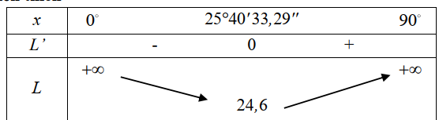Vậy chiều dài L ngắn nhất là 24,6 m
Câu 22. Có 10 lọ hóa chất trong đó có 4 lọ loại I, 6 lọ loại II. Nếu dùng lọ loại I thì kết quả tốt với xác suất 0.9, nếu dùng lọ loại II thì kết quả tốt với xác suất 0.5. Tìm xác suất để lọ hóa chất tốt này thuộc loại I.
Lời giải chi tiết:
Gọi \( B_1 \): Lọ loại I, \( B_2 \): Lọ loại II, \( A \): Kết quả tốt.
\( P(B_1) = \frac{4}{10} \), \( P(B_2) = \frac{6}{10} \), \( P(A|B_1) = 0.9 \), \( P(A|B_2) = 0.5 \).
Xác suất \( P(A) = \frac{4}{10} \cdot 0.9 + \frac{6}{10} \cdot 0.5 = 0.66 \).
Theo Bayes: \( P(B_1|A) = \frac{P(B_1)P(A|B_1)}{P(A)} = \frac{\frac{4}{10} \cdot 0.9}{0.66} = \frac{6}{11} \approx 0.55 \).
Đáp án: 0.55
Nhập họ và tên: